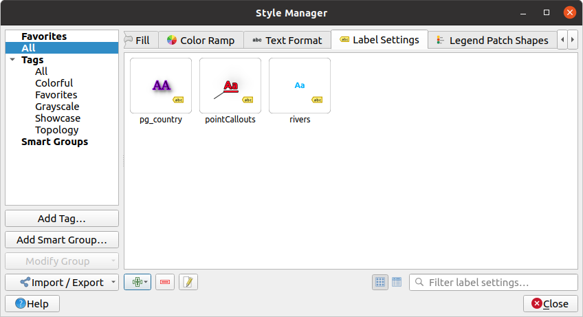

Labels are textual information you can display on vector features or maps.
They add details you could not necessarily represent using symbols.
Two types of text-related items are available in QGIS:
Press the Add item button. The Text Format
dialog opens for configuration.
As usual, these properties are data-definable.
Label Settings: extend the text format settings with properties
related to the location or the interaction with other texts or features
(callouts, placement,
overlay, scale visibility, mask …).
They are used to configure smart labelling for vector layers through the
Labels tab of the vector Layer Properties
dialog or Layer Styling panel or using the Layer
Labeling Options button of the Label toolbar.
To create a Label Settings item:
Open the Style Manager dialog
Activate the Label Settings tab

Fig. 13.15 Label Settings in Style Manager dialog
Press the Add item menu and select the entry corresponding
to the geometry type of the features you want to label.
The Label Settings dialog opens with the following properties.
As usual, these properties are data-definable.
and Allow HTML Formatting:
The HTML formatting option enables the proper rendering of some HTML tags to
customize the label. The supported tags are the HTML Color tags
(applied to text, underline, strikethrough, and overline).
In order to use the HTML formatting, you need to provide the HTML code
in the Value field. The expression is parsed and any supported
HTML tag overrides its corresponding setting in the labels properties.
They also combine well with other background, shadow, buffer… properties
of labels.
Below an example of a HTML-based expression and rendering
(applies different colors and underline to the same label):
At the bottom of the tab, a widget shows a filterable list of compatible items
stored in your style manager database.
This allows you to easily configure the current text format or label setting
based on an existing one, and also save a new item to the style database:
Press the Save format… or Save settings… button
and provide a name and tag(s).
Note
When configuring a Label Settings item, text format items
are also available in this widget. Select one to quickly overwrite the current
textual properties of the label.
Likewise, you can create/overwrite a text format from there.
Use the Type case option to change the capitalization style of
the text. You have the possibility to render the text as:
No change
All uppercase
All lowercase
Title case: modifies the first letter of each word into capital,
and turns the other letters into lower case if the original text is using
a single type case. In case of mixed type cases in the text, the other
letters are left untouched.
Force first letter to capital: modifies the first letter of each
word into capital and leaves the other letters in the text untouched.
Under Spacing, change the space between words and between
individual letters.
Enable kerning of the text font
Set the Text orientation which can be Horizontal
or Vertical. It can also be Rotation-based when
setting a label (e.g., to properly label line features in parallel placement mode).
Use the Blend mode option to determine how your labels will mix
with the map features below them (more details at Blending Modes).
The Apply label text substitutes option allows you
to specify a list of texts to substitute to texts in feature labels (e.g.,
abbreviating street types). Replacement texts are used when displaying
labels on the map. Users can also export and import lists of
substitutes to make reuse and sharing easier.
Configure Multiple lines:
Set a character that will force a line break in the text with the
Wrap on character option
Set an ideal line size for auto-wrapping using the Wrap lines to
option. The size can represent either the Maximum line length
or the Minimum line length.
Decide the Line Height
Format the Alignment: typical values available are
Left, Right, Justify and Center.
When setting point labels properties, the text alignment can also be
Follow label placement. In that case, the alignment will depend
on the final placement of the label relative to the point. E.g., if the
label is placed to the left of the point, then the label will be right
aligned, while if it is placed to the right, it will be left aligned.
Note
The Multiple lines formatting is not yet supported by curve based
label placement. The options will then be deactivated.
For line labels you can include Line direction symbol
to help determine the line directions, with symbols to use to indicate the
Left or Right. They work particularly well when
used with the curved or Parallel placement options from the
Placement tab. There are options to set the symbols position, and
to Reverse direction.
Use the Formatted numbers option to format numeric
texts. You can set the number of Decimal places. By default, 3
decimal places will be used. Use the Show plus sign if
you want to show the plus sign for positive numbers.
Color buffer’s fill: The buffer expands from the
label’s outline, so, if the option is activated, the label’s interior is
filled. This may be relevant when using partially transparent labels or with
non-normal blending modes, which will allow seeing behind the label’s text.
Unchecking the option (while using totally transparent labels) will allow you
to create outlined text labels.
Define the buffer’s Opacity
Apply a Pen join style: it can be Round,
Miter or Bevel
Use the Blend mode option to determine how your label’s buffer
will mix with the map components below them (more details at
Blending Modes).
Check Draw effects to add advanced paint effects for improving text readability,
eg through outer glows and blurs.
The Background tab allows you to configure a
shape that stays below each label. To add a background, activate
the Draw Background checkbox and select
the Shape type. It can be:
a regular shape such as Rectangle, Square,
Circle or Ellipse using full properties of a
fill symbol
an SVG symbol from a file, a URL or embedded in the project
or style database (more details)
or a Marker Symbol you can create or select from the
symbol library.
To add a shadow to the text, enable the Shadow
tab and activate the Draw drop shadow. Then you can:
Indicate the item used to generate the shadow with Draw under.
It can be the Lowest label component or a particular
component such as the Text itself, the Buffer or
the Background.
Set the shadow’s Offset from the item being shadowded, ie:
The angle: clockwise, it depends on the underlying item orientation
The distance of offset from the item being shadowded
The units of the offset
If you tick the Use global shadow checkbox,
then the zero point of the angle is always oriented to the north and
doesn’t depend on the orientation of the label’s item.
Influence the appearance of the shadow with the Blur
radius. The higher the number, the softer the shadows, in the units of
your choice.
Define the shadow’s Opacity
Rescale the shadow’s size using the Scale
factor
Choose the shadow’s Color
Use the Blend mode option to determine how your label’s shadow
will mix with the map components below them (more details at
Blending Modes).
The Mask tab allows you to define a mask area around
the labels. This feature is very useful when you have overlapping symbols and
labels with similar colors, and you want to make the labels visible.
A common practice when placing labels on a crowded map is to use callouts -
labels which are placed outside (or displaced from) their associated feature
are identified with a dynamic line connecting the label and the feature.
If one of the two endings (either the label or the feature) is moved,
the shape of the connector is recomputed.
To add a callout to a label, enable the Callouts
tab and activate the Draw callouts. Then you can:
Select the Style of connector, one of:
Simple lines: a straight line, the shortest path
Manhattan style: a 90° broken line
Curved lines: a curved line
Balloons: a speech bubble surrounding the label and pointing
to the feature. It can have rounded corners.
For a line-based callout:
Select the Line style with full capabilities of a line
symbol including layer effects, and data-defined
settings
If curved, you also define:
the percentage of Curvature of the connection line
and its Orientation: starting from the label to the feature,
it can be Clockwise or Counter-clockwise, or
Automatic (determining an optimal orientation for each label)
Set the Minimum length of callout lines
Check whether to Draw lines to all feature parts
from the feature’s label
Set the Label anchor point: controls where the connector
line should join to the label text. Available options:
Closest point
Centroid
Fixed position at the edge (Top left, Top center,
Top right, Left middle, Right middle,
Bottom left, Bottom center and Bottom right).
Set the Offset from label area option: controls the distance
from the label anchor point (where the callout line ends).
This avoids drawing lines right up against the text.
For a balloon callout, you’d need to set:
the Fill style with full capabilities of a fill
symbol including layer effects, and data-defined
settings
the Corner radius of the speech bubble
the Wedge width: how large the bubble speech connection with
feature’s pointer should be
the Margins around the label’s text
Set the Offset from feature option: controls the distance
from the feature (or its anchor point if a polygon) where callout lines end.
Eg, this avoids drawing lines right up against the edges of the features.
Set the Feature anchor point for the (polygon) feature (the end
point of the connector line). Available options:
Pole of inaccessibility
Point on exterior
Point on surface
Centroid
Set the Blend mode: controls the blending
of the callout.
Under the Data defined placement group, coordinates of the
Origin (on the label side) and/or Destination
(on the feature side) points of the callout can be controlled.
Callouts can also be controlled manually by using the Move Label, Diagram or Callout tool in the Labeling Toolbar.
The start and end points of each callout can be moved this way.
The nodes should be highlighted when the mouse pointer is nearby.
If needed the Shift Key can be held during the movement.
This will snap the point in a way that the angle between the two callout points
increments by 15 degrees.
Choose the Placement tab for configuring label placement
and labeling priority. Note that the placement options differ according to the
type of vector layer, namely point, line or polygon, and are affected by
the global PAL setting.
Cartographic: point labels are generated with a
better visual relationship with the point feature, following ideal
cartographic placement rules. Labels can be placed:
at a set Distance in supported units,
either from the point feature itself or from the bounds of the symbol
used to represent the feature (set in Distance offset from).
The latter option is especially useful when the symbol size isn’t fixed,
e.g. if it’s set by a data defined size or when using different symbols
in a categorized renderer.
following a Position priority that can be customized or set for
an individual feature using a data defined list of prioritised positions.
This also allows only certain placements to be used, so e.g.
for coastal features you can prevent labels being placed over the land.
By default, cartographic mode placements are prioritised in the following
order (respecting the guidelines from Krygier and Wood (2011)
and other cartographic textbooks):
top right
top left
bottom right
bottom left
middle right
middle left
top, slightly right
bottom, slightly left.
Around Point: labels are placed in a circle around the feature.
equal radius (set in Distance) circle around the feature.
The placement priority is clockwise from the “top right”. The position can
be constrained using the data-defined Quadrant option.
Offset from Point: labels are placed at an Offset X,Y
distance from the point feature, in various units, or preferably over the
feature. You can use a data-defined Quadrant to constrain the
placement and can assign a Rotation to the label.
Parallel: draws the label parallel to a generalised line
representing the feature, with preference for placement over straighter
portions of the line. You can define:
Allowed positions: Above line, On line,
Below line and Line orientation dependent position
(placing the label at the left or the right of the line). It’s possible to
select several options at once. In that case, QGIS will look for the optimal
label position.
Distance between the label and the line
Curved: draws the label following the curvature of the line
feature. In addition to the parameters available with the Parallel
mode, you can set the Maximum angle between curved characters,
either inside or outside.
Horizontal: draws labels horizontally along the length of the
line feature.
Repeating LabelsDistance to display multiple
times the label over the length of the feature. The distance can be in
Millimeters, Points, Pixels, Metersatscale, MapUnits
and Inches.
A Label OverrunDistance (not available for
horizontal mode): specifies the maximal allowable distance a label may run
past the end (or start) of line features. Increasing this value can allow
for labels to be shown for shorter line features.
Label Anchoring: controls the placement of the labels along the
line feature they refer to. Click on Settings … to choose:
the position along the line (as a ratio) which labels will be
placed close to. It can be data-defined and possible values are:
Center of Line
Start of Line
End of Line
or Custom….
Clipping: Determines how the label placement on a line is calculated.
By default only the visible extent of the line is used but the whole extent
can be used to have more consistent results.
Placement Behavior: use Preferred Placement Hint
to treat the label anchor only as a hint for the label placement.
By choosing Strict, labels are placed exactly on the label
anchor.
Offset from Centroid: labels are placed over the feature centroid
or at a fixed Offset X,Y distance (in supported units) from the centroid.
The reference centroid can be determined based on the
part of the polygon rendered in the map canvas (visible polygon)
or the whole polygon, no matter if you can see it. You can also:
force the centroid point to lay inside their polygon
place the label within a specific quadrant
assign a rotation
Allow placing labels outside of polygons when it is not
possible to place them inside the polygon. Thanks to data-defined properties,
this makes possible to either allow outside labels, prevent outside labels,
or force outside labels on a feature-by-feature basis.
Around Centroid: places the label within a preset distance around
the centroid, with a preference for the placement directly over the centroid.
Again, you can define whether the centroid is the one of the
visible polygon or the whole polygon, and whether
to force the centroid point inside the polygon.
Horizontal: places at the best position a horizontal label inside
the polygon. The preferred placement is further from the edges of the polygon.
It’s possible to Allow placing labels outside of polygons.
Free (Angled): places at the best position a rotated label
inside the polygon. The rotation respects the polygon’s orientation and
the preferred placement is further from the edges of the polygon.
It’s possible to Allow placing labels outside of polygons.
Using Perimeter: draws the label parallel to a generalised line
representing the polygon boundary, with preference for straighter portions
of the perimeter. You can define:
Allowed positions: Above line, On line,
Below line and Line orientation dependent position
(placing the label at the left or the right of the polygon’s boundary).
It’s possible to select several options at once. In that case, QGIS will
look for the optimal label position.
Distance between the label and the polygon’s outline
the Repeating LabelsDistance to display multiple
times the label over the length of the perimeter.
Using Perimeter (Curved): draws the label following the curvature
of the polygon’s boundary. In addition to the parameters available with the
Using Perimeter mode, you can set the
Maximum angle between curved characters polygon, either inside
or outside.
Outside Polygons: always places labels outside the polygons,
at a set Distance
The Geometry Generator section allows a user to alter the underlying
geometry used to place and render the label, by using expressions.
This can be useful to perform displacement of the geometry dynamically
or to convert it to another geometry (type).
In order to use the geometry generator:
Check the : guilabel:Geometry generator option
Enter the expression generating the geometry to rely on
If relevant, select the geometry type of the expression output:
the label geometry-based settings such as placement or rendering
are updated to match the new geometry type capabilities.
Some use cases include:
Use a geometry which is saved in another field “label_position”
The Data Defined group provides direct control on labels
placement, on a feature-by-feature basis. It relies on their attributes
or an expression to set:
the X and Y coordinate
the text alignment over the custom position set above:
Horizontal: it can be Left, Center or Right
the text Vertical: it can be Bottom, Base, Half,
Cap or Top
the text Rotation. Check the Preserve data rotation
values entry if you want to keep the rotation value in the associated field
and apply it to the label, whether the label is pinned or not. If unchecked,
unpinning the label rotation is reset and its value cleared from the attribute
table.
Note
Data-defined rotation with polygon features is currently supported
only with the Around centroid placement mode.
Note
Expressions can not be used in combination with the labels map tools
(ie the Rotate label and Move label tools)
to data-define labels placement.
The widget will be reset to the corresponding auxiliary storage field.
In the Priority section you can define the placement priority rank
of each label, ie if there are different diagrams or labels candidates for the
same location, the item with the higher priority will be displayed and the
others could be left out.
The priority rank is also used to evaluate whether a label could be omitted
due to a greater weighted obstacle feature.
In some contexts (eg, high density labels, overlapping features…), the
labels placement can result in labels being placed over unrelated features.
An obstacle is a feature over which QGIS avoids placing other features’ labels
or diagrams. This can be controlled from the Obstacles section:
Activate the Features act as obstacles
option to decide that features of the layer should act as obstacles for
any label and diagram (including items from other features in the same layer).
Instead of the whole layer, you can select a subset of features to use as
obstacles, using the data-defined override control next
to the option.
Use the Settings button to tweak the obstacle’s weighting.
For every potential obstacle feature you can assign an Obstacle
weight: any label or diagram
whose placement priority rank is greater than this value can be placed
over. Labels or diagrams with lower rank will be omitted if no other
placement is possible.
This weighting can also be data-defined, so that within the same layer,
certain features are more likely to be covered than others.
For polygon layers, you can choose the kind of obstacle the feature is:
over the feature’s interior: avoids placing labels over the interior
of the polygon (prefers placing labels totally outside or just slightly
inside the polygon)
or over the feature’s boundary: avoids placing labels over the
boundary of the polygon (prefers placing labels outside or completely
inside the polygon). This can be useful for layers where the features
cover the whole area (administrative units, categorical coverages, …).
In this case, it is impossible to avoid
placing labels within these features, and it looks much better when
placing them over the boundaries between features is avoided.
You find the scale-based
and the Pixel size-based visibility settings.
The Label z-index determines the order in which labels are rendered,
as well in relation with other feature labels in the layer (using data-defined
override expression), as with labels from other layers. Labels with a higher
z-index are rendered on top of labels (from any layer) with lower z-index.
Additionally, the logic has been tweaked so that if two labels have
matching z-indexes, then:
if they are from the same layer, the smaller label will be drawn above the
larger label
if they are from different layers, the labels will be drawn in the same order
as their layers themselves (ie respecting the order set in the map legend).
Note
This setting doesn’t make labels to be drawn below the
features from other layers, it just controls the order in which
labels are drawn on top of all the layers’ features.
While rendering labels and in order to display readable labels,
QGIS automatically evaluates the position of the labels and can hide some of them
in case of collision. You can however choose to Show all
labels for this layer (including colliding labels) in order to manually fix
their placement (see The Label Toolbar).
With data-defined expressions in Show label and Always Show
you can fine tune which labels should be rendered.
Allow to Show upside-down labels: alternatives are Never,
when rotation defined or always.
You can choose to Label every part of a multi-part features
and Limit number of features to be labeled to.
Both line and polygon layers offer the option to set a minimum size for
the features to be labeled, using Suppress labeling of features
smaller than.
For polygon features, you can also filter the labels to show according to
whether they completely fit within their feature or not.
For line features, you can choose to Merge connected lines
to avoid duplicate labels, rendering a quite airy map in conjunction with
the Distance or Repeat options in the Placement tab.
 Style Manager dialog
Style Manager dialog Add item button. The Text Format
dialog opens for configuration.
As usual, these properties are data-definable.
Add item button. The Text Format
dialog opens for configuration.
As usual, these properties are data-definable. Labels tab of the vector Layer Properties
dialog or Layer Styling panel or using the
Labels tab of the vector Layer Properties
dialog or Layer Styling panel or using the  Text tab, you can set:
Text tab, you can set: Formatting tab, you can:
Formatting tab, you can: Enable kerning of the text font
Enable kerning of the text font Apply label text substitutes option allows you
to specify a list of texts to substitute to texts in feature labels (e.g.,
abbreviating street types). Replacement texts are used when displaying
labels on the map. Users can also export and import lists of
substitutes to make reuse and sharing easier.
Apply label text substitutes option allows you
to specify a list of texts to substitute to texts in feature labels (e.g.,
abbreviating street types). Replacement texts are used when displaying
labels on the map. Users can also export and import lists of
substitutes to make reuse and sharing easier. Buffer tab. Then you can:
Buffer tab. Then you can: paint effects for improving text readability,
eg through outer glows and blurs.
paint effects for improving text readability,
eg through outer glows and blurs. Background tab allows you to configure a
shape that stays below each label. To add a background, activate
the
Background tab allows you to configure a
shape that stays below each label. To add a background, activate
the  Shadow
tab and activate the
Shadow
tab and activate the  Mask tab allows you to define a mask area around
the labels. This feature is very useful when you have overlapping symbols and
labels with similar colors, and you want to make the labels visible.
Mask tab allows you to define a mask area around
the labels. This feature is very useful when you have overlapping symbols and
labels with similar colors, and you want to make the labels visible.
{kind=link}
 Move Label, Diagram or Callout tool in the Labeling Toolbar.
The start and end points of each callout can be moved this way.
The nodes should be highlighted when the mouse pointer is nearby.
If needed the Shift Key can be held during the movement.
This will snap the point in a way that the angle between the two callout points
increments by 15 degrees.
Move Label, Diagram or Callout tool in the Labeling Toolbar.
The start and end points of each callout can be moved this way.
The nodes should be highlighted when the mouse pointer is nearby.
If needed the Shift Key can be held during the movement.
This will snap the point in a way that the angle between the two callout points
increments by 15 degrees. Placement tab for configuring label placement
and labeling priority. Note that the placement options differ according to the
type of vector layer, namely point, line or polygon, and are affected by
the global PAL setting.
Placement tab for configuring label placement
and labeling priority. Note that the placement options differ according to the
type of vector layer, namely point, line or polygon, and are affected by
the global PAL setting.
 Center of Line
Center of Line Start of Line
Start of Line End of Line
End of Line Custom….
Custom….
 data-defined override control next
to the option.
data-defined override control next
to the option. Rendering tab, you can tune when the labels can
be rendered and their interaction with other labels and features.
Rendering tab, you can tune when the labels can
be rendered and their interaction with other labels and features.